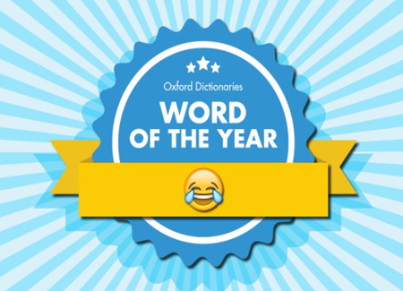

Emojineering:
Is it possible to predict emoji use?
[Natural Language Processing] [Python] [Machine Learning] [Scikit-Learn] [Web-Scraping]
 Follow the Project on GitHub
{kind=link}
{kind=link}
{kind=link}
{kind=link}
{kind=link}
Lead efforts in using Natural Language Processing techniques to handle cleaning, supervised clustering, and classifying.
It is well documented that emojis and emoticons can express meaning in our texting and social media posting in ways that simple words cannot. Why do some texts contain emojis and why do others not. Do emojis add semantic value? Can we accurately extract sentiment? These questions are all pertinent to our project's goal--to create an emoji tool that can assign the appropriate emoji to a given piece of text. We stripped all emojis from each document in our training set (ie, nearly 1 Million tweets from 2013) and treated them as our target labels. If our predictions proved accurate enough, we would pursue further work into inserting emojis into larger corpuses.
With a large dataset of dirty data, our first order of business was to clean our tweets and explore the question of why people even use emojis. As with many projects, cleaning the data took the bulk of all our time--normalizing handles and urls, removing retweets, distinguishing Enlglish tweets from other languages, and splitting hashtags. With over 700 possible emojis combined in varying degress, our next step was to disambiguate emoji use. We looked at the most commonly used Emojis using a frequency distribution, and discovered 'face' or 'person' related emojis composed the vast majority of emoji use (ie, roughly 80% of all tweets containing at least one). Similar work was done with bigrams and collocations. Although some insight was taken away from these more traditional NLP techniques, the outcomes were nonetheless wanting. We pursued a more unique method called Word2Vec, which trains on your entire corpus and creates a feature vector to determine similar words. The results were surprisingly informative, seeing as the tool was designed for words.
Aware that predicting over 700 emojis was not feasible, we applied two different supervised learning techniques to create unbiased clusters of emojis based on correlation. Although the clusters made some sense semantically, they were not distributed in a way that reflected sentiment. After failing to use supervised learning techniques to create meaningful and well-distributed categories, we decided to manually categorize emojis with the keyword ‘face’.Although manual labeling introduced a certain level of bias, the grouping reflected a more typical use of emojis. Only face emojis were used for labeling. We identified four meaningful groups: ‘non-human’, ‘love’, ‘happy’, and ‘despairing’.
We took a very aggressive approach to the feature engineering process. To predict the Emojis, we came up with a lengthly list of features: Number of punctuation, Number of hashtag, Sentiment score, IsReweets, Q-grams, Tfidf – using TfidfVectorizer, Count Vectorizer, Synset, and POS. Similarly we created a structured pipeline to test different sets of features and classifiers. Our accuracy scores did not prove as successful as we had hoped for. Future work would involve a deeper look into the structure of tweets, as more conventional NLP techniques--which traditionally work well on larger corpuses--did not capture meanning for our documents.
As previously mentioned, our findings inform the need for techniques that are more rigorous and unique to tweets. Because tweets are short in nature and specifically used as a conversational tool, we could do more analysis on how and why emojis are used. The features we created were suited for larger and more standardized pieces of text. Given this knowledge, we could take a number of additional steps for future work. Finding a way to link tweets by conversation could create richer documents. Conducting more rigorous sentiment analysis on how tweets are used would inform better feature engineering. Exploring other methods of clustering and categorizing emojis might reflect use of emoji more accurately. Pursue Word2Vec further, as this method afforded the best results. In the end, there is still much to do and the journey will not end here!
Group Members: Daniel Chen, Hadrien Renold
Follow the Project on GitHub home